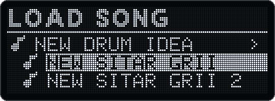
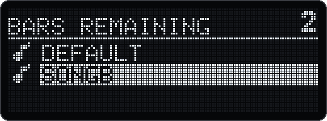
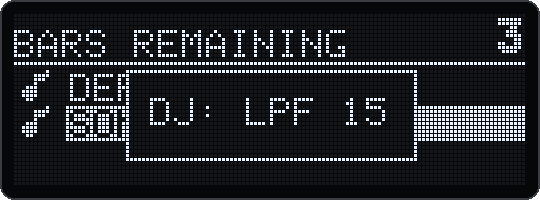
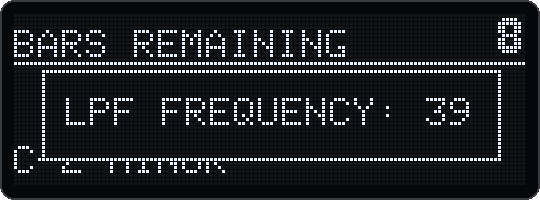

Ein Song-Browser, der die Versionen eines Songs zusammenhält, ein Countdown beim Songwechsel, Speichern ohne Knacken, ein dimmbares OLED und Pads, die nicht flimmern, dazu Korrekturen für MIDI, Clock und Karte.
Songs, deren Namen sich nur durch eine Zahl am Ende unterscheiden, sind Versionen eines Songs: «New Sitar Grii», «New Sitar Grii 2» … «New Sitar Grii 10» erscheinen als eine Zeile mit Pfeil. Die Zeile zeigt den ganzen Namen.
Eine Zahl nach «-» oder «.» gehört zum Namen: «TR-808» und «Jam 2026-09-27» bleiben eigene Songs.

| Du willst … | So geht es |
|---|---|
| eine Gruppe öffnen | Klicken: SELECT oder LOAD drücken. Die Versionen erscheinen eingerückt darunter. |
| eine Version laden | Hindrehen und klicken. Das geht auch während der Wiedergabe, mit Countdown (§7.2). |
| eine Gruppe schliessen | BACK auf einer ihrer Versionen. Geöffnete Gruppen bleiben offen, während du weiterdrehst, bis zu 8. |
| den geladenen Song finden | Browser öffnen: Die Gruppe des geladenen Songs ist schon offen. |
| per Name laden | Den Namen tippen; der Song lädt direkt. |
| löschen | SHIFT + SAVE auf einer Version. Auf einer geschlossenen Gruppenzeile ist das gesperrt: «Open the group first». |
Speichern und die anderen Browser sind unverändert. Der Browser liest den Ordner seltener als vorher, und wenn du während der Wiedergabe blätterst, pausiert die Audio-Routine höchstens 0,39 ms.
Lädst du einen Song, während ein anderer spielt, zählt der Deluge bis zum Wechsel herunter:
Das stimmt auch mit Swing und mit externer MIDI-Clock.



Settings → OLED brightness, Stufen 1–10. 10 ist so hell wie bisher, 1 ist noch lesbar. Jede Drehung wirkt sofort, und die Stufe gilt auch nach einem Neustart. Die lesbare Firmware-Version beschreibt §1.4.
Settings → Community features → Flicker-free dimming, standardmässig an.
Wenn der Deluge seine Community-Einstellungen speichert, behält er jetzt auch die, die er nicht kennt, zum Beispiel aus einer neueren Version, mit Name und Wert. 1.2.1, v17 und die aktuelle Community-Firmware schreiben sie unter einem falschen Namen zurück. Ein Wechsel zu v17 und zurück setzt deshalb Output limiter, Filter crossing guard und OLED brightness weiterhin auf ihre Grundeinstellung zurück. Stelle sie nach einem solchen Wechsel neu ein.
| Korrektur | Seit | Was sich geändert hat |
|---|---|---|
| MIDI- und Gate-Ausgänge pünktlich | v13 | Ereignisse spät in einem Audio-Block gingen einen ganzen Block (2,9 ms) zu früh hinaus, besonders beim Speichern. Und der Timer der MIDI- und Gate-Ausgänge wurde vor dem Start nie zurückgesetzt: Eine Wiedergabe konnte bis zu 38 Samples zu früh kommen oder nach einem Überlauf etwa 127 ms zu spät. Jetzt stimmt jede Wiedergabe auf ±1,4 Samples genau. |
| Späte Clock-Bytes | v17 | Ein Clock-Byte, das spät gelesen wird, tickt jetzt sofort statt bis zu 2,9 ms zu spät. |
| Clock-Ausgänge bei externer Clock | v15 | Folgte der Deluge einer externen MIDI-Clock, stoppten seine Gate-Clock- und MIDI-Clock-Ausgänge nach einem kurzen Schub. Jetzt laufen beide im Takt der eingehenden Clock weiter. Mit interner Clock bleibt alles wie bisher. |
| Section-Start per CC | v15 | Ein auf einen CC gelernter Section-Start ging beim Laden des Songs verloren; gelernte Noten blieben erhalten. Jetzt bleibt auch der CC. |
| USB-MIDI vom Computer | v15 | Kam MIDI schneller als einmal pro Millisekunde (dichte Automation aus der DAW, SysEx, Dateizugriff über USB), gingen Pakete verloren. Jetzt wartet der Computer, bis der Deluge bereit ist. |
| Kartenzugriffe | v14 | Bei jeder Übertragung von und zur SD-Karte konnte ein gleichzeitiger Schreibzugriff direkt neben dem Puffer verloren gehen. Dieser Fehler stammt aus 1.2.1. |
| Dateizugriff über USB | v14 | In seltenen Fällen konnten falsche Bytes in einer kopierten Datei landen (§8.7). |
Die drei Korrekturen von v15 stammen aus der aktuellen Community-Firmware.